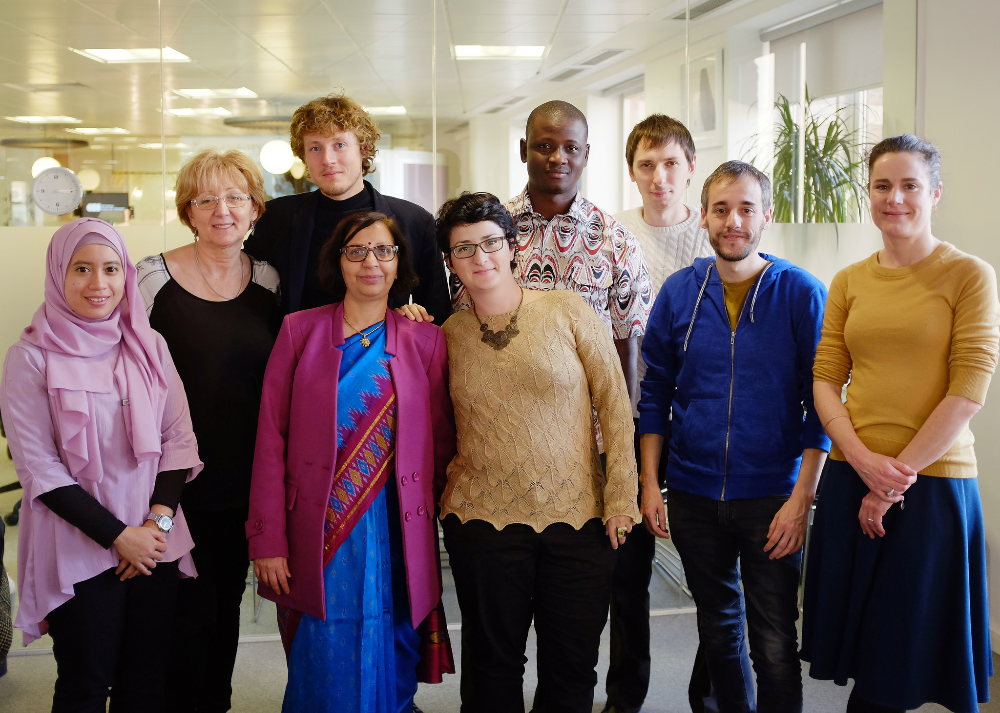
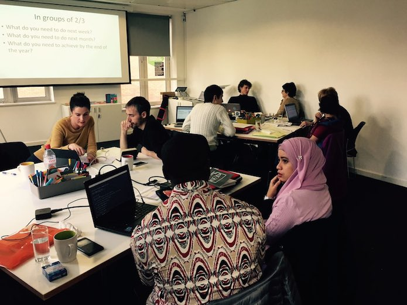

Having welcomed nine open data leaders from around the world to London for a week of peer-learning as part of the Open Data Leaders’ Network, Dawn Duhaney reflects on what the programme has achieved in the year since it began
 The third cohort of open data leaders, in London this week at ODI HQ. CC BY 2.0, uploaded by [the ODI](https://www.flickr.com/photos/ukodi/24609965943/in/photostream/ “the ODI").
At the ODI, our mission is to connect, equip and inspire people around the world to innovate with open data. Our activities to help achieve this range from supporting startups to build products and services to bringing actors together in order to discuss the future of data infrastructure.
By end of 2014 we realised we were frequently meeting similar types of individuals in our services work. These were people working within their governments to implement a vision, and a plan for how open data could benefit their country or city. Often they had the help of a small team, and possessed leadership qualities – such as drive, energy and strong communication skills – coupled with a creative approach to problem solving.
Many of these public sector leaders came to us because they were facing similar challenges. Some found it tricky to encourage user engagement, others found themselves consistently making the case for open data, or had trouble sustaining momentum after the launch of an open data portal. Despite being from different geographical locations and holding different professional roles across national, state and city government levels, they faced similar roadblocks. Before long, we found through conversation with the leaders that often one would be having some success in solving a challenge that another was facing.
With this in mind, the Open Data Leaders’ Network (ODLN) was born as a space for individuals leading the implementation of their government’s open data initiatives to connect, exchange ideas, and develop frameworks and strategies for solving problems. The ODLN also serves as a place for these individuals to reflect on their achievements as policy entrepreneurs driving organisational change in government.
Impacts and benefits: from refined strategies to Whatsapp chats
Our first cohort ran in February 2015, and now, one year on, we have convened a total of over 20 leaders from across five continents, including New Zealand, the UK, the Philippines, Macedonia, and Buenos Aires, Argentina. A wealth of knowledge and experience has been exchanged and problems consolidated in this year. In the sessions held in London, leaders worked on new strategies to connect the supply and demand sides of open data, promoting innovation and organising training in their own departments.
Additionally, via ongoing communication in a Whatsapp group, leaders exchange tips for creating new departmental action plans and organised further meetups at open data and open government conferences around the world.
In December 2015, we launched an open call inviting leaders from around the world to become part of the network, and received over 40 applications.
Meet the 2016 open data leaders
This week, we have welcomed our third cohort of nine open data leaders from four continents to London. Sign up here to attend our lunchtime lecture on Friday 26 February to learn more about their projects.
 The open data leaders sharing what they work on. Photo: Emma Truswell.
Our open data leaders are:
Jose Ma Subero Munilla, Open Data Manager, Government of Aragon, Spain
Jose has been managing the Aragon open data initiative since its creation in 2012. The initiative has a strong focus on fiscal transparency, publishing the budget of the Aragon government and 33 counties of the region every 3 months, and contributes to the openbudgets.eu project. Jose's team also develops a linked data project, Aragopedia to give citizens a view of open data in their local areas.
Malick Tapsoba, Deputy Manager, Burkina Open Data Initiative, Burkina Faso
Malick was a key driver in Burkina Faso’s open elections project. With his team he helped ensure results of Burkina Faso’s 2015 presidential election were made openly available in real-time on www.burkina2015.bf, helping to make it the first fully democratic election process in nearly three decades.
Fernanda Capagnucci, Head of Integrity, Sao Paulo City Hall, Brazil
Fernanda has helped develop a strong community engagement and transparency focus for the open data initiative in Sao Paulo, where key FOI requests and contracts data are released online. She also runs a ‘Cafehacker’ programme to connect with open data users after data release - including datasets on women's safety in public spaces to public procurement.
Tezza Rasika, Open Data Manager, Regional Development Planning Board, Jakarta
Jakarta’s open data porta was launched in June 2015, currently holds 655 datasets on health, education and transportation. Tezza is focusing on how to increase local government and public participation in open data to stimulate innovation and civic transparency.
Marija Kujacic, Head of the Department for Implementation in e-Government, Ministry of Public Administration, Serbia
Marija is leading work with government agencies to implement Serbia’s open data action plan for 2016. Marija worked with the UNDP to coordinate the first open data hackathon in Serbia, and led the government organisation of the first open data conference in Belgrade.
Pauline Riordan, Manager, Dublinked Open Data Platform, Dublin
Pauline is part of the team that recently relaunched the open data platform dublinked.ie and smart cities framework smartdublin.ie this month. This year, she is focusing on how to ensure that Dublin is connected, engaged and open, not just to technology and data innovation but to new collaborations and ways of working.
Marco Bani, Head of Technical Secretariat, Agency for Digital Italy
Italy’s open data portal was launched in May 2015. Marco’s team operates within the Prime Minister’s Cabinet Office and currently develops open data capacity within and outside of government, to enable the creation of open data apps and services.
Alka Mishra, Head of the Division for Open Data, National Informatics Centre, India
Alka leads the open government data initiative in India. She focuses on the technical development of data.gov.in and collaboration and engagement with the open data community. Alka's team is working on methods to encourage citizen engagement, and the development of mygov.in, a platform launched by the Prime Minister of India, Naredra Modi, to promote exchange on policy issues, governance and public service delivery.
Alexey Vsykub, Deputy Head of State Agency for e-Governance, Ukraine
Alexey co-wrote the open data roadmap for Ukraine in 2016, which in the past month received approval from the Deputy Prime Minister of Ukraine with targets of releasing 700 priority datasets this year.
We will be posting more about their work and their perspectives over the next two weeks as part of our open data leaders series. Watch this space.
Looking ahead: bridging networks
We’re looking forward to scaling the reach we achieved last year, through connecting with other city-based, national, sectorial and regional networks. If you are part of a network, or know of one, which you think we should connect with, get in touch with with ODLN Community Manager [email protected].
If you have ideas or experience in open data that you'd like to share, pitch us a blog or tweet us at @ODIHQ.